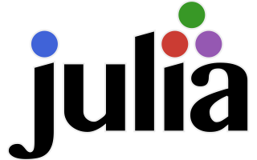

My Blog
About
Welcome to my blog
Categories
All
(8)
chatgpt
(1)
code
(5)
geophysics
(1)
julia
(3)
jupyter
(1)
news
(1)
python
(1)
quarto
(2)
science
(2)
2022 annual emission of CO₂
science
According to the World Economic Forum, global CO₂ emissions from fossil fuels hits a record high in 2022 (link).
Jan 12, 2023
Ralph-Uwe Börner
What is Bayesian inference
science
chatgpt
Bayesian inference is a mathematical method for estimating the values of unknown parameters based on observed data…
Dec 2, 2022
Ralph-Uwe Börner
Geophysical inversion
code
python
geophysics
The aim of the inversion is to reconstruct the spatial distribution of resistivity in the subsurface. This is based on the measured data, usually ohmic resistances
\(R(L)\)
…
Nov 24, 2022
Ralph-Uwe Börner
Geodetic coordinate transforms with Julia
code
julia
This blog post is about geodetic coordinate transforms using the
Julia
programming language.
Oct 26, 2022
Ralph-Uwe Börner

Quarto and Julia
code
julia
There are quite a few development environments available for Julia, e.g., Visual Studio Code, Jupyter, Pluto.jl.
Sep 30, 2022
Ralph-Uwe Börner
Post With Code
news
code
julia
This is a post with executable code.
Sep 30, 2022
Ralph-Uwe Börner
Welcome to my Blog
quarto
This is the first post in a Quarto blog.
Sep 30, 2022
Ralph-Uwe Börner
Jupyter example
code
jupyter
quarto
This blog post has been entirely written within a Jupyter Notebook.
Sep 29, 2022
Ralph-Uwe Börner
No matching items